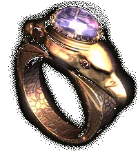
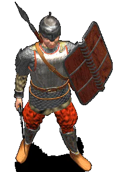
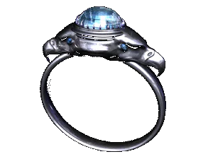
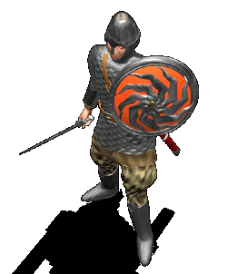

Летопись Времен |
 |
|
|
|
Введение |
|
| Ближе к
концу июля нам удалось побывать на студии Snowball
Interactive, осуществляющей разработку real-time
стратегии "Всеслав Чародей: Клан Драгомира"
в рамках серии "Летопись Времен". "Всеслав
Чародей" должен появиться в сентябре/октябре
1997 года; вслед за ним, ближе к зиме, последует
ролевый "Князь: Амулет Дракона" (игра
создается внутри компании 1С), и уже на 1998 год
запланирована индустриальная стратегия
"Меркурий-8: Плавящиеся Тени".
Предполагаются и другие проекты, продолжающие
серию, но пока что говорить о них рановато, по
причине того, что все они сейчас обитают лишь на
уровне идей. Основная идея "Летописи Времен" состоит в том, что существует некая жизнеспособная среда, с собственной сюжетной концепцией, с характерными героями и событиями. Среда развивается во времени, доходя от средневеко-фэнтезийного общества до подобного нашему. Игры, которые будут основываться на "Летописи Времен", происходят в различные периоды развития этой среды. Изданием всех проектов серии "Летопись Времен" занимается компания 1С. Мы уже рассказывали о "Всеславе Чародее" и "Князе" в четвертом номере "Навигатора". Сейчас настал черед более подробно остановиться на сюжетной предыстории самой "Летописи Времен", которая предстает в виде повествовательной саги. Мы надеемся, вам будет интересно ее прочесть. Воспринимайте все это как предпосылки для развития "Князя" и "Всеслава Чародея". |
|
 |
|
Восход Эры Героев |
|
| После
заката Эры Драконов, когда стала меняться сама
сущность мира и время магии было уже сочтено,
земля перешла к взращенным драконами титанам.
Они были настолько неуязвимы и жили так долго,
что были прозваны людьми молодых королевств
"богами". Большинство титанов, служивших
семьям драконов, предпочло объединиться в
небольшие группы, чтобы сохранить накопленные
знания и продолжить свое дело. Так возникли
первые кланы. Предчувствовавшие
свое близкое исчезновение драконы,
вырождавшиеся с каждым новым поколением,
предпочли удалиться на одинокий остров. Свои
самые сокровенные знания они передали клану
Северного Острова, титаны которого поклялись
проследить за достойной судьбой их потомков.
Наступившая Эра Титанов, во время которой
магические силы продолжали ускользать из мира,
дала начало нескольким десяткам кланов титанов,
каждый из которых занял определенную территорию
и выбрал определенное поле деятельности. Один из титанов клана
Северного Острова, мастерvкузнец Крозз, с помощью
оставшихся драконов нашел способ сохранить
часть уходящей магии, заключив ее в "поющих
вещах". Магические силы все еще оставались
одной из главных сил титанов, поэтому такое
знание моментально распространилось среди всех
кланов. В результате к закату Эры каждый титан
клана имел в своем распоряжении как минимум
несколько "поющих вещей", в которых были
заключены необходимые ему магические силы. Такие
вещи строго охранялись от простых смертных, так
как в результате экспериментов было быстро
установлено, что каждая такая вещь имеет свою
"душу" и может заставить слабого владельца
делать то, что ей угодно. |
|

|
|
| В самом
начале эры титаны, пользуясь все еще сильной
тогда магией, вывели из смертных для своего
удобства особую породу "героев". Герои были
компромиссом между миром смертных и древним
миром титанов. Они были смертны, и их можно было
легко убить, однако каждый раз они перерождались
в новом теле и по мере взросления
восстанавливали свою личность. Таким образом, не
наделив героев своим бессмертием, титаны
обеспечили постоянство их личностей. Знания и
новые черты личности, обретенные героем, не
пропадали с его смертью. Эра Титанов закончилась Днем Исхода. В этот
день, как будет выяснено позднее, из своих замков
исчезли все титаны, а также большинство
"поющих вещей". Героям пришлось принять на
себя бремя власти, покинутое ушедшими
правителями, однако без их мощи захват и
разрушение величественных замков варварами
молодых королевств было лишь вопросом времени.
На основе знаний титанов герои понимали ту
опасность, которую таили немногие С уходом титанов стала меняться и сама природа героев. Сохранявшие при перерождениях общие черты личности и навыки, герои стали адаптироваться к новому порядку мира и в результате такой эволюции при перерождении стали теперь сохранять свою личность в мельчайших деталях, также как и все свои воспоминания из предыдущей жизни. Наступила Эра Героев. |
|
|
|
Амулет Дракона |
|
| Давным-давно,
когда на Земле господствовали Титаны, одним из
самых могущественных кланов считался Северный.
Клан обладал множеством грозных магических
предметов. Самым страшным из них был браслет
Владыки. Этот древний браслет, доставшийся
Титанам еще от Прародителей, давал его
обладателю полный контроль над сознанием
смертных. Титаны давали таким предметам
собственные имена, так как каждый из предметов
обладал собственной индивидуальностью и мог формировать сознание своего хозяина. Так что если владелец предмета не обладал достаточно сильным духом, он мог превратиться из хозяина предмета в его раба.
Много тысяч лет спустя
вечные враги Северного клана, {Желтые Собаки
Пустыни -- ,то, что искали}, посланники сил хаоса и
разрушения, окружили отряд Арра в песках у
Великих Пирамид. Завязалась смертельная схватка.
Силы врагов значительно превосходили отряд Арра,
который состоял из одних только смертных. Через
три часа кровопролитного сражения на
раскаленном песке под палящим солнцем, когда из
многочисленного отряда осталось в живых всего
десяток воинов, Арр понял, что шансов уцелеть уже
нет. Чтобы Амулет Дракона не достался врагам, |
|

|
|
| Первого
ястреба с частью амулета Ар послал к своему
самому старому и верному другу византийцу Михаилу. Вторую часть амулета он отправил в Скандинавию викингу Сигурду. А третью часть ястреб унес славянскому герою Всеславу. Получив часть амулета, Михаил сразу почуял недоброе. Он понял, что с Арром случилось что-то непоправимое и что судьба Владыки теперь зависит только от него. Он нанялся охранником в купеческий обоз и отправился в земли Славян. Вторая часть амулета, как и положено, попала в руки Сигурда. Но природное добродушие и болтливость сослужили старому воину плохую службу. В один из вечеров один из викингов -- Харальд, напоил Сигурда и выведал у него секрет амулета. Воспользовавшись покровом ночи Харальд подло убил Сигурда и забрал вторую часть амулета. На следующее утро после убийства Харальд присоединился к воинам, которые отправлялись в великий поход на Славян. Под именем Харольда скрывался Драгомир v один из воинов враждебного клана. Третьего ястреба на пути к лагерю Всеслава сбила стрела Одинокого Волка, который уже давно обосновался в лесу у болот, поджидая того, кто придет за браслетом. Волк был последним представителем одного из небольших кланов и помощью браслета он рассчитывал возродить свой клан и на земле Славян основать мощное государство. Через два месяца пути трех потомков великих Титанов пересеклись на славянской земле.
|
|

|
|
| Драгомир и Всеслав | |
|
|
|
| В
"Князь: Амулет Дракона" воссоздана история
Амулета Дракона, когда один из героев, Драгомир
Воин из клана Черного Облака, решив создать свой
собственный пост-клан, собрал поющие вещи
Северного Острова, прошел Стража и получил во
владение магический браслет, ставший первой
вещью его пост-клана. "Всеслав Чародей: Клан Драгомира" воссоздает события более позднего периода. Со Дня Исхода Всеслав Чародей, один из наиболее сильных героев клана Северного Острова, является Хранителем Турима Ваала, Огненного Меча клана. Драгомир Воин осаждает долину Изяславля в попытке заполучить Турим Ваал для своего постvклана, однако Всеслав и на этот раз отражает атаку, в результате которой ослабевший Драгомир попадает под влияние собранных им поющих вещей. "Князь" начинает
линию игр, посвященных истории жизни Драгомира.
"Всеслав" -- линию игр по истории Всеслава. |
|
|
|
|
| Дизайнеры Snowball Interactive будут несказанно благодарны всем, кто найдет время прислать свои предложения по «Всеславу» и «Меркурию-8». Команда «1С» также ждет ваших предложений по «Князю». | |
|
|
|
Text and pictures are (c) 1997 by Snowball Interactive Entertainment, Inc. (c) 1997 by ИЧП "Агарун Компани". All rights reserved. |
|